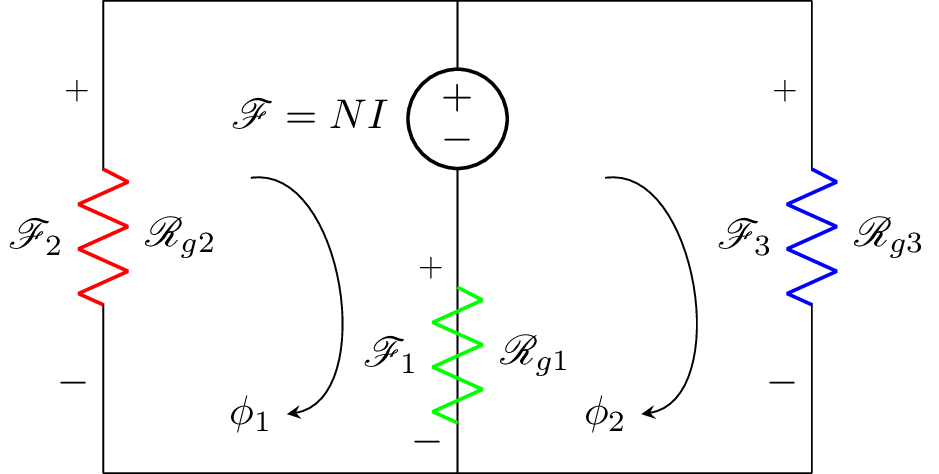

\documentclass{standalone}
\usepackage[american]{circuitikz}
\usepackage{graphicx}
\usepackage{mathrsfs}
\usepackage{latexsym,amssymb,amsmath}
\newcommand{\equal}{=}
\begin{document}
\begin{circuitikz}
\draw (3,4) to [V,l_=$\mathscr{F}\equal NI$] (3,2)
(3,2) to [R,l^=$\mathscr{R}_{g1}$, v_>=$\mathscr{F}_1$, color=green] (3,0)
(3,2) -- (3,0)
(3,0) -- (0,0)
(0,4) to [R,l^=$\mathscr{R}_{g2}$, v_>=$\mathscr{F}_2$, color=red] (0,0)
(6,4) to [R, l^=$\mathscr{R}_{g3}$,v_>=$\mathscr{F}_3$, color=blue] (6,0)
(6,0) -- (3,0)
(0,4) -- (6,4);
% \draw[thin, <-, >=triangle 45] (1.5,1.5) node[scale=2]{$\phi$} ++(-90:0.5) arc (-90:100:0.5);
\node (phi) at (1.25,0.5) {$\phi_1$};
\draw[-stealth] (1.25,2.5) to [bend left=90] (phi);
\node (phi) at (4.25,0.5) {$\phi_2$};
\draw[-stealth] (4.25,2.5) to [bend left=90] (phi);
\end{circuitikz}
% \begin{circuitikz}
% \draw (0,3) to [V,l_=$\mathscr{F}\equal NI$] (0,0)
% (0,3) to [R,l^=$\mathscr{R}_{1,thick}$, v_>=$\mathscr{F}_1$, color=red] (0,6)
% (0,6) to [R, l^=$\mathscr{R}_{2,thin}$,v_>=$\mathscr{F}_2$, color=blue] (3,6)
% (3,6) -- (3,3)
% (3,3) to [R, l^=$\mathscr{R}_{3,thick}$,v_>=$\mathscr{F}_3$, color=red] (3,0)
% (3,0) to [R, l^= $\mathscr{R}_{4,thin}$,v_>=$\mathscr{F}_4$, color=blue] (0,0)
%
% (1.5,3) node[scale=4]{${\circlearrowright}$}
% (1.5,3) node[scale=2]{${\mathbf{\phi}}$};
% ;\end{circuitikz}
% \label{fig:q1fig}
\end{document}Created by David Li